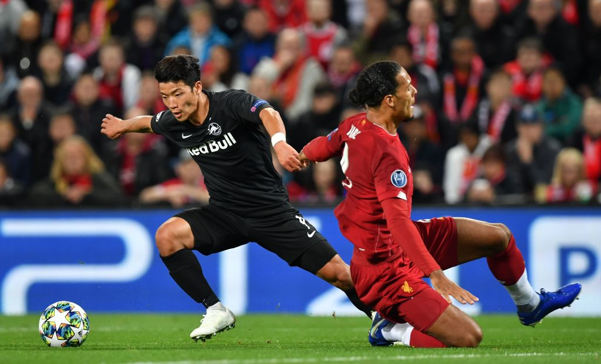

- SON HEUNG-MIN
- LEE SEUNG-WOO
- HWANG HEE-CHAN
HWANG HEE-CHAN

Hwang Hee-chan is a South Korean professional footballer who plays as a forward for FC Red Bull Salzburg and the South Korea national team.
Early Life
Hwang Hee-chan was born in Chuncheon, but his entire family moved to Bucheon right after his birth.
They lived there until he was eleven years old.
He started to play football in Singok Elementary School in Uijeongbu, South Korea.
In 2008, he scored the most goals in both Hwanrang-Daegi Youth Cup and Dongwon Youth Cup.
His performance also continued in South Korean U-12 national team: he scored 22 goals in Kanga Cup, which was the highest record in history of Kanga Cup.
With outstanding performances in these competitions, he was awarded the grand prize of the 21st Cha Bum-Kun Football Award.